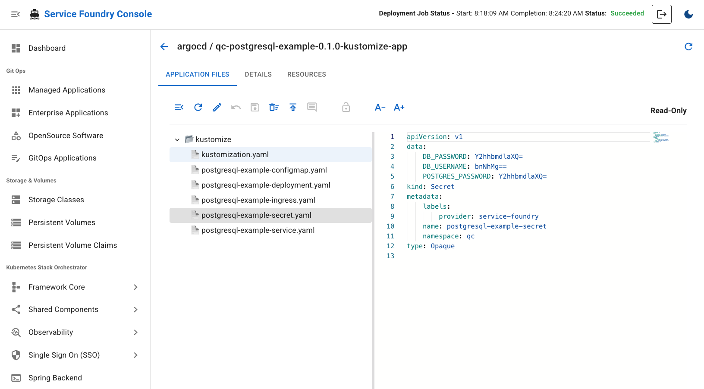

It is not possible to edit a Sealed Secret directly because it is encrypted using a public key. To update the data in a Sealed Secret, you need to follow these steps:
-
View the unsealed Secret to see the current data.
-
Edit the data in the unsealed Secret.
-
Re-seal the Secret to create a new Sealed Secret.
Service Foundry Console simplifies this process by providing an interface to edit the Sealed Secret directly. When you edit a Sealed Secret in the console, it automatically handles the unsealing, editing, and re-sealing process for you.
Figure 3. Console - Edit Sealed Secret
Firstly, click the 'Pencil' icon to start editing the Sealed Secret. Then, click the 'unlock' icon to view the unsealed Secret data. After making the necessary changes, click the 'save' button to change the data. Finally,
click the 'publish' icon to push the updated manifest to the Git repository. Then, the Backend will automatically re-seal the Secret and update the Sealed Secret in the Git repository.

Figure 4. Console - Unsealed Secret Data
POSTGRES_PASSWORD is added to the Secret data.
Figure 5. Console - Commit Changes to Git
On GitHub, you can see the updated Sealed Secret with the new encrypted data.
Figure 6. GitHub - Updated Sealed Secret
Summary of Editing Sealed Secrets
In this section, we covered how to edit a Sealed Secret using Service Foundry Console. The console simplifies the process by handling the unsealing, editing, and re-sealing of the Secret automatically. This allows users to securely manage sensitive data in a GitOps workflow without needing to manually handle encryption and decryption.